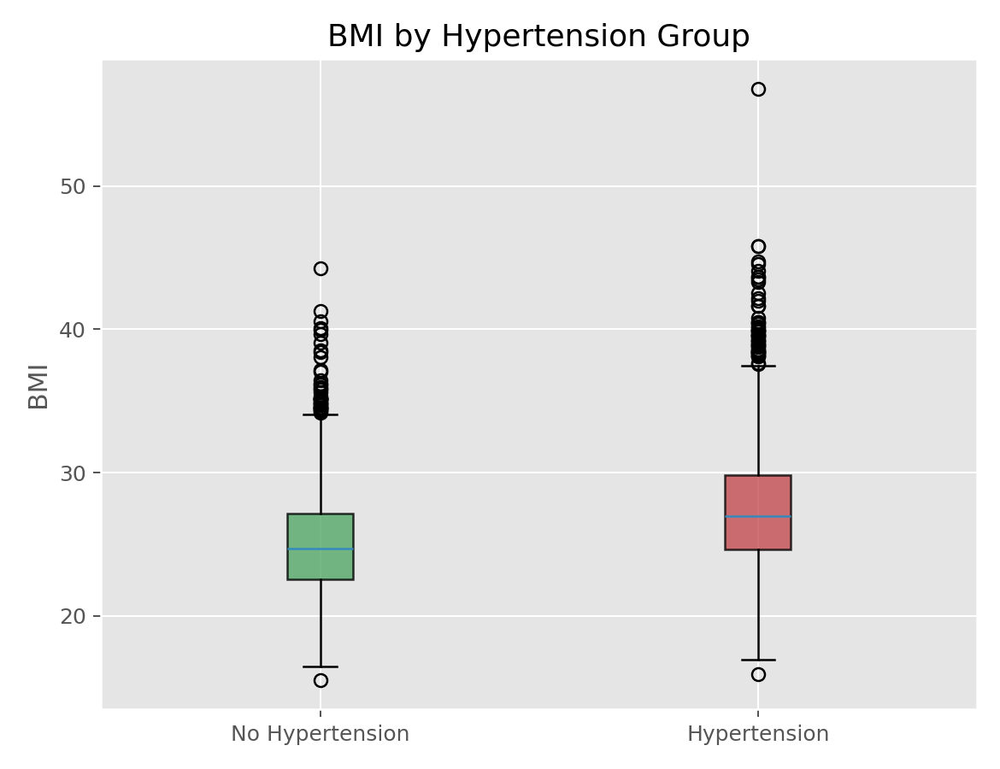

描述统计与统计推断 · 02·08
Wilcoxon秩和检验
Wilcoxon Rank-Sum Test
Wilcoxon秩和检验（Wilcoxon Rank-Sum Test）
§1
方法概览
1.1 定义
Wilcoxon 秩和检验是两独立样本的非参数检验，通过比较两组观测的秩来判断它们是否来自相同位置分布。
1.2 它主要解决什么问题
- 研究问题：两组独立样本的中心位置是否存在差异。
- 适用任务：偏态数据、等级数据、异常值较多时的两组比较。
- 常见医学场景：比较治疗组与对照组的住院天数、中位数炎症指标、评分量表。
1.3 直觉理解
如果某组整体更大，那么这组样本在合并排序后会更常拿到靠后的高秩，于是秩和会系统性偏大。
§2
数学形式
2.1 核心公式
$$ W = \sum_{i=1}^{n_1} R_{1i} $$
2.2 参数或统计量含义
- $W$：某一组样本秩和。
- 零假设下，若两组分布相同，则秩应大致均匀混合。
2.3 关键假设
- 两组样本独立。
- 数据至少可排序。
- 若要解释为位置差异，通常还需要两组分布形状相近。
§3
数据形式与输入输出
3.1 适合的数据形式
- 自变量类型：二分类分组变量。
- 因变量类型：连续型或等级型。
- 数据结构：两独立组。
- 是否适合高维数据：不适合批量高维未经校正的反复检验。
- 是否适合缺失较多数据：可用，但组间缺失不平衡会影响解释。
- 是否适合删失数据：不适合。
- 是否适合重复测量数据：不适合。
3.2 示例表格
一个典型场景是用 Framingham_data.csv 基线数据比较不同高血压状态下的 BMI 分布：
| RANDID | PREVHYP | BMI |
|---|---|---|
| 2448 | 0 | 26.97 |
| 6238 | 0 | 28.73 |
| 9428 | 0 | 25.34 |
| 10552 | 1 | 28.58 |
| 11263 | 1 | 30.30 |
3.3 输入与产出
输入
- 输入数据：两组独立观测。
- 关键变量：组别、连续或等级结局。
- 需要预处理的内容：缺失值、ties 处理。
产出
- 模型对象/统计结果：U 统计量或秩和统计量、p 值。
- 参数估计：有时可补充 Hodges-Lehmann 位置差估计。
- 预测结果：无。
- 不确定性指标：主要是检验结果，可补充区间估计。
§4
适用场景
- 适合：两组独立样本、偏态分布、等级数据。
- 不适合：配对设计、三组及以上比较。
- 使用前需要特别检查的点：独立性、分布形状是否差异过大。
§5
实现
常用包：
scipy
import numpy as np
from scipy import stats
group1 = np.array([5, 7, 9, 10, 12])
group2 = np.array([8, 11, 13, 15, 16])
res = stats.mannwhitneyu(group1, group2, alternative="two-sided")
print(res.statistic, res.pvalue)
常用包：
stats
group1 <- c(5, 7, 9, 10, 12)
group2 <- c(8, 11, 13, 15, 16)
wilcox.test(group1, group2, paired = FALSE)
§6
结果如何解释
- 核心结果看什么：两组观测是否存在系统性高低排序差异。
- 每个主要参数如何解释：p 值反映秩混合程度是否偏离零假设。
- 临床或医学意义如何表达：最好同时给中位数、IQR 或位置差估计。
- 常见误读：它并不总是检验“中位数差”，只有在特定形状假设下才可这样理解。
§7
推荐可视化
- 箱线图。
- 小提琴图。
- ECDF 叠加图。
7.1 图像示例
下图给出 BMI 按高血压状态分组后的箱线图，适合与 Wilcoxon 秩和检验一起出现。

§8
优势、局限与常见坑
优势
- 对异常值更稳健。
- 可处理等级数据。
- 实现简单。
局限
- 不能自动控制混杂。
- 分布形状不同会影响解释。
- 多 ties 时近似会变复杂。
常见坑
- 把秩差异误解为均值差异。
- 忽略两组并非独立。
- 用它替代所有两组比较而不看研究设计。
§9
与相近方法的区别
- 和两独立样本 t 检验的区别：本方法更稳健，不依赖均值和正态性。
- 和 Kruskal-Wallis 的区别：后者是多组推广。
- 应该如何选择：两组偏态数据且关心位置差异时优先考虑本方法。
§10
医学研究中的典型应用
- 比较两组住院天数。
- 比较两组疼痛评分或等级量表。
- 用于小样本且异常值明显的两组连续变量比较。
§11
相关方法
§12
参考资料
- Conover WJ. Practical Nonparametric Statistics. 3rd ed. Wiley; 1999.
- SciPy Developers.
scipy.stats.mannwhitneyu. SciPy API Reference. https://docs.scipy.org/doc/scipy/reference/generated/scipy.stats.mannwhitneyu.html （访问日期：2026-07-02） - R Core Team.
wilcox.test. R Manual. https://stat.ethz.ch/R-manual/R-devel/library/stats/html/wilcox.test.html （访问日期：2026-07-02）
— 黑盒词典 · 02·08 —